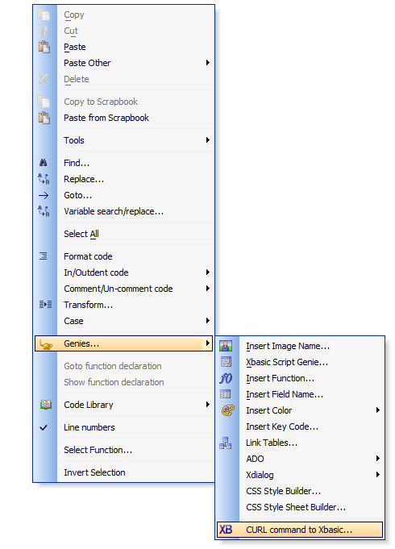
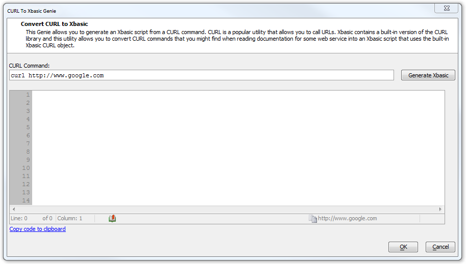
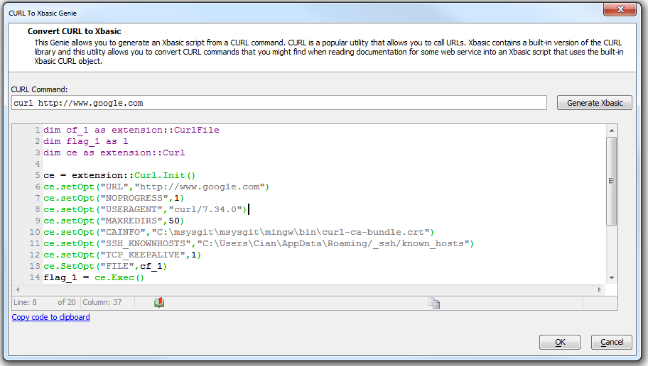

The easiest way to get started with the Xbasic CURL class is to use the genie on the right click menu in the Code editor.
type your CURL command in...
... and press the button to generate the code.
... then proceed to edit the generated script to replace constant strings that are included in the generated scripts with variables.
If you look at the script generated by the above example, you will notice that a CURLFile and CURL object are dimmed.
The CURL object is used for building up and executing the CURL command.
The CURLFile object is used to hold the results of a CURL request.
The setOpt() calls are all for setting the various CURL command options, all of which are available on the command line as parameters. The names that are used for the parameters are all consistent with those used by the libCURL library (which is used internally by Xbasic).
The Exec() call does the work once everything is set up (using setOpt calls), Exec() returns logical 'true' if the command succeeded, else 'false' if there was a failure.
In the event of a successful operation, the file object that you passed in will contain the result of the request.
The GetHeaders() call returns the headers, but only if SetHeaderFlag(.t.) was called on the file object before the call. In the example below, headers will always be empty.
The GetContent() call returns the data, in this case the HTML for the http request.
The content can either be a string or binary data - if the http request was for an image, GetContent() will return binary data.
dim cf_1 as extension::CURLFile
dim flag_1 as l
dim ce as extension::CURL
ce = extension::CURL.Init()
ce.setOpt("URL","http://www.google.com")
ce.setOpt("NOPROGRESS",1)
ce.setOpt("USERAGENT","CURL/7.34.0")
ce.setOpt("MAXREDIRS",50)
ce.setOpt("CAINFO","C:\msysgit\msysgit\mingw\bin\CURL-ca-bundle.crt")
ce.setOpt("SSH_KNOWNHOSTS","C:\Users\Cian\AppData\Roaming/_ssh/known_hosts")
ce.setOpt("TCP_KEEPALIVE",1) ce.SetOpt("FILE",cf_1)
flag_1 = ce.Exec()
if flag_1 then
showvar( "Headers: "+crlf()+cf_1.GetHeaders()+crlf()+"Content:"+crlf()+cf_1.GetContent())
else
showvar("error: " + ce.Error() )
end if
ce.close()
To see the header information, add this line before the call to Exec() in the script
cf_1.SetHeaderFlag(.t.)